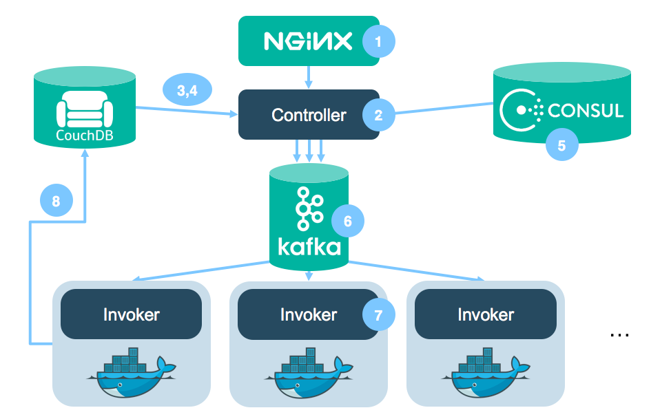

AWS Lambda
AWS Lambda是目前最有影响力的serverless产品，它依据事件响应触发用户自定义的Lambda函数，并自动管理后端的服务器、高可用以及自动扩展等：
通过 AWS Lambda，无需配置或管理服务器即可运行代码。您只需按消耗的计算时间付费 – 代码未运行时不产生费用。借助 Lambda，您几乎可以为任何类型的应用程序或后端服务运行代码，而且全部无需管理。只需上传您的代码，Lambda 会处理运行和扩展高可用性代码所需的一切工作。您可以将您的代码设置为自动从其他 AWS 服务触发，或者直接从任何 Web 或移动应用程序调用。
AWS Lambda是一项计算服务，依响应事件来运行您的代码并为您自动管理底层计算资源。您可以使用 AWS Lambda 通过自定义逻辑来扩展其他 AWS 服务，或创建您自己的按 AWS 规模、性能和安全性运行的后端服务。AWS Lambda 可以自动运行代码以响应多个事件，例如 Amazon S3 存储桶中对象的修改或 Amazon DynamoDB 中的表更新。
Lambda 在可用性高的计算基础设施上运行您的代码，执行计算资源的所有管理工作，其中包括服务器和操作系统维护、容量预配置和自动扩展、代码和安全补丁部署以及代码监控和记录。您只需要提供代码。
其主要特性包括：
- 用自定义逻辑扩展其他 AWS 服务
- 构建自定义后端服务
- 完全自动化的管理，无需关注底层操作系统
- 内置容错能力， 可在各区域中跨过多个可用区维护计算容量
- 自动扩展
- 集成化安全模型
- 自备代码
- 灵活的资源模型
- 目前支持Java、JS、Python等语言
- Lamdba的价格非常便宜
Lambda推荐的应用场景包括
- 数据处理，比如文件处理、实时数据流处理或者提取、转换、加载等
- 构建后端以处理 Web、移动、物联网 (IoT) 和第 3 方 API 请求
Google Cloud Functions
Google Cloud Functions允许用户创建js函数来自动响应事件，支持发布/订阅模型。用户可以配置一个“触发器”来监听这些事件，通过在Node.js环境执行JavaScript代码对这些事件做出响应。目前，“触发器”可以通过以下途径激活。
- 云发布/订阅（Cloud Pub/Sub）：任何异步的发布/订阅事件
- 云存储（Cloud Storage）：对象变更通知
- HTTP调用：通过HTTP进行的同步调用
- 调试/直接调用：使用命令行界面（CLI）开发/调试“云函数”
Google Cloud Functions还在Alpha阶段，不受SLA限制，因此还不适合用在生产环境。
Azure Functions
Azure Functions是一个基于事件的无服务器计算产品，可以方便集成Azure服务、Dropbox等存储服务以及Github等devops服务。Azure Functions还提供了一个Web IDE，方便在线编辑和调试应用。典型应用场景包括
- 定时任务
- Azure服务事件处理
- Web应用
- 移动后端
- 实时流式处理
IBM OpenWhisk
OpenWhisk是IBM发布的开源事件驱动计算平台，剑指AWS Lambda，其代码开源在Github上https://github.com/openwhisk/openwhisk。


Facebook Parse
Parse是专为移动应用提供后台服务的云计算平台，Parse为开发者承接了繁琐的后台服务，让开发者只需专注于具体的前端开发工作。它提供任意数据存储、通知发送/推送、地理位置数据使用、Facebook/Twitter 登陆帐号添加等服务。
Facebook在2013年将其收购，并于今年一月份宣布关闭Parse服务并将其开源，开源地址在https://github.com/ParsePlatform/parse-server。
其他
All in one solutions
- Firebase - Realtime database, authentication, hosting. A powerful platform for your mobile or web application.
- Backendless - Realtime database, authentication, hosting.
- Stamplay - “IFTTT For Back-End Development”.
- Kinvey - Build your digital business faster with mobile Backend as a Service.
- Syncano - An all-in-one platform to create realtime apps without a server.
- Hoodie - Hoodie is a complete backend for your apps: develop your frontend code.
- UserApp - The user management API. Fastest way to build user management with payments, email, and social.
Hosting and code execution in the cloud
- Amazon Lambda - Run code without thinking about servers. Pay for only the compute time you consume.
- Google Cloud Functions - Lightweight, event-based, asynchronous compute solution that allows you to create small, single-purpose functions that respond to cloud events without the need to manage a server or a runtime environment.
- Azure Functions - Listen and react to events across your stack.
- Fission - Fast, extensible, open source serverless functions on any Kubernetes cluster
- IBM OpenWhisk - Distributed compute service to execute application logic in response to events.
- iron.io - Isolates code and dependencies of individual tasks so they can be processed on demand.
- weblab.io - Microservices at your fingertips.
- Peer5 - The serverless CDN. Limitless, affordable video delivery. More traffic means a stronger network.
- StdLib - Function as a service library and platform.
- Auth0 Webtasks - Run code with an HTTP call. No provisioning. No deployment.
- Webscripts - Scripting on the web.
- APItools - Troubleshoot, Modify, Monitor API traffic.
- Surge - Deploy static sites from the command line.
- Netlify - Generate & deploy static sites from git repositories.
- Effe - a simple Open Source building block to emulate AWS Lambda.
- Lever OS - Serverless + Microservices = ♥
- Now - realtime node.js deployments
- Brightwork - Backend in a box for Developers
- OpenComponents - Serverless microservices for front-end components
- Kloudbit - Kloudbit helps developers build robust applications without the hassle of backend coding and server management.